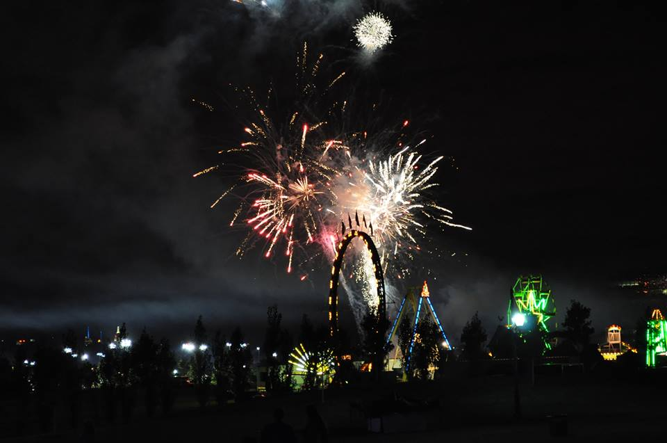

Cycling is permitted on Henry Hudson Drive from River Road in Edgewater up to and including Alpine Approach Road. Bicycles must have wheels of at least 24 inches and riders must be over 14 years old, wear helmets, and obey all traffic and park regulations. Bicycles are also allowed on Old Route 9W from U.S. Route 9W to State Line Lookout.
This bike and pedestrian path travels from Ridgewood to Rochelle Park and is approximately 6 miles in length. This continuous path runs through Ridgewood, Glen Rock, Fair Lawn, Paramus, Saddle Brook and Rochelle Park and under Route 4. This path also follows the Saddle River and Ho-Ho-Kus Brook and passes by the Historic Easton Tower at Route 4. The path features a scenic waterfall at Dunkerhook Park, and there are three ponds, tree shaded picnic areas, pavilions, playgrounds, tennis courts and athletic fields accessible along the path
200 Campgaw Road
Mahwah, NJ 07430
201.327.7800
Campgaw offers a complex network of eight marked trails in a rather compact area; The flat trails at the base of Campgaw Mountain are ideal for those looking for a short, easy hike, and they can be combined with those that lead to the viewpoint at the summit of the mountain for a longer, more challenging hike. Individual trails range from 0.3 to 3.0 miles; nearly all are under a mile.
200 Midvale Mountain Road
Mahwah, NJ 07430
201.327.7234
Miles of trails criss cross the camp. Trail markers will help you find them as you discover both the history and the beauty of the camp. Trails in camp range in difficulty from short hikes (2 miles) up to the Ten Mile Hike (10 miles).
973.962.7031
Open Daily Sunrise to Sunset
Directions: Take Route 287 to exit 57 and follow Skyline Drive
Miles of trails criss cross the camp. Trail markers will help you find them as you discover both the history and the beauty of the camp. Trails in camp range in difficulty from short hikes (2 miles) up to the Ten Mile Hike (10 miles).
201.768.1360
Trails are open year-round during daylight hours only
Two main trails each cover most of the approximately 13-mile length of the Park, here described south-to-north. For more information on the specific trails, use the link above.
20 Puffin Way
Teaneck, NJ 07666
201.836.2403
Teaneck Nature Center Experience Teaneck Creek Conservancy’s 46-acre park. The grounds have over 2 miles of groomed trails for year-round walking, jogging, and nature observation. Choose from any one of three trail surfaces, stone dust (with barrier-free access from Fycke Lane), wood chip, or forested foot path. Each affords the opportunity to clear your mind and restore your spirit.
313 Hudson Ave
Tenafly, NJ 07670
201. 568.6093
Yellow Trail Guide- A popular trail for families and individuals with small children. It is a 1/3 mile path that starts at the John A. Redfield Building by the Model Backyard Habitat and ends on the Main Trail near Pfister’s Pond. You will find signs along the trail that correspond to the numbers in this guide. Enjoy your walk!
2 De Korte Park Plz
Lyndhurst, NJ 07071
201.460.4667
This Trail is a ½-mile long boardwalk through the brackish marsh with excellent views of the city skyline. It was the first handicapped accessible nature trail built in New Jersey. The trail connects a series of islands along the former Kingsland Creek and it is a great spot for bird watching. The tidal impoundment creates a unique habitat for nesting and migrant aquatic animals and birds. The Marsh Discovery Trail serves as an outdoor classroom, with wildlife observation blinds and class study docks. Interpretive signs are located throughout.
201.768.1360
Palisades Park Boating There are two boat basins in the NJ Section of the Palisades Interstate Park, Alpine Boat Basin, operated by the Park, and Englewood Boat Basin, operated independently.
These basins have a combined capacity of around 250 slips, and both have fuel docks and showers. Transient slips (when available) can be rented on a nightly basis during the season.

Meadowlands Tours New Jersey Meadowlands Commision pontoon boats are a leisurely way to experience the Hackensack River. Warmer weather and longer days make the spring and summer a perfect time to join NJMC for a narrated evening cruise with the New York City skyline as a backdrop. Learn about shore birds, salt marshes, the Lenni Lenape Indians, pirates and history along the banks of the River.
Launching from the River Barge Park and Marina in Carlstadt, these two-hour evening tours are conducted by trained captains and hosted by NJMC staff, each with a unique story to tell about the Meadowlands.
RiverkeeperEco-Cruises are fun, educational tours of the Hackensack River and the NJ Meadowlands aboard Hackensack Riverkeeper's specially-rigged pontoon boats, the Robert H. Boyle and the Edward Abbey. Captain Bill Sheehan started our Eco-Cruise program in 1994 to increase public awareness of the lower Hackensack River watershed as a vital natural and recreational resource. Since then more than 25,000 people have traveled with us. Eco-Cruises generally take between two and two and one-half hours and are fully narrated by a US Coast Guard-licensed Captain.
Henry Hoebel Area
Fort Lee Road, Leonia
201.336.7275
Joseph Caricci Area
River Road, Lyndhurst
Separate area for both big and small dogs.
Paterson Ave, Wallington
Separate area for both big and small dogs.
235 Harrington Ave.
Westwood, NJ 07675
201.664.7882
East Ridgewood Ave, Ridgewood
Separate area for both big and small dogs.
Horseback riding Saddle Ridge is set on 28 acres of mountains, fields and trails; staffed by a friendly, warm-hearted group of professionals. All of our programs provide a positive and comfortable, yet challenging lesson to improve the rider's and horses' abilities. The entire staff continuously strives to maintain and enhance the facility to provide our clients with services they come to expect.

As New Jersey’s premiere learn to ski/snowboard and tubing destination, Campgaw Mountain offers an alpine escape right in your backyard. Located in northern Bergen County, we are the closest ski area to the New York metro area with 100% snowmaking capabilities. Only 18 miles north of the George Washington Bridge.
Campgaw provides skiing and snowboarding terrain for all abilities with short lift lines, un-crowded trails, and a friendly staff. You’ll find the latest in rental equipment and the highest level of skiing or snowboarding instruction for all ages. Whether you are a beginner or an enthusiast, you’ll love the skiing, snowboarding, and tubing at Campgaw Mountain.


Visitors can choose from a variety of marked cross-country ski trails ranging from beginner to expert to hone their skills while taking in breathtaking views of New York City and the Hudson River. The marked and maintained ski trails are located at State Line Lookout, located two miles north of Exit 2 on the Palisades Interstate Parkway.
The county's largest park area with more than 4,000 acres, Ramapo Valley County Reservation is situated at the edge of the Highlands region. The reservation boasts plenty of trails for skiing and nice views of the Ramapo River as well as several ponds.
Darlington sprawls across 178 acres, at the foothills of the scenic Ramapo Mountains. Cross-country enthusiasts can enjoy skiiing on the park roadways that surround the lakes.
The multi-use pathways at Saddle River County Park are a popular destination for cross-country skiing. They run along the Saddle River and its tributaries, and connect five different park areas in Rochelle Park, Saddle Brook, Paramus, Glen Rock and Ridgewood.
Cross-country skiing is permitted along more than seven miles of trails from dawn to dusk.
Cross-country skiing is good on the Transco Trail with views of open water, mudflats and plenty of shorebirds. Cross-country skiers can also enjoy the Carillon area and beyond on Disposal Road that borders the park.
Crossing through Leonia, Ridgefield Park, Palisades Park and Teaneck – more than 800 acres in all - has vast expanses of open fields where cross-country skiers are spotted, especially on the 40-acre field in Ridgefield Park.
Snow and ice don't make for ideal golfing conditions, so these county golf courses use the wintry weather to their advantage by offering cross-country skiing. Skiers are asked not to ski across the greens. Rockleigh spans across 264 acres at the base of the Palisades' western slope in Bergen County's Northern Valley, while Orchard Hill is a smaller, nine-hole course.
Conveniently located in Westwood, New Jersey, this family owned and operated skating rink offers year round skating for all ages and abilities. It is both the birthplace and home of the North Jersey Figure Skating Club.

The Ice House in Hackensack has four regulation size NHL rinks, and is the largest facility of its kind in the Tri-State area. Located just minutes from New York City, the Ice House is recognized as a world-class skating facility. Conveniently located on two levels with a full view of the rinks, we also offer a full service food court, party rooms, and meeting rooms. Ice House operates one of the largest full service hockey and skating Pro Shop in the New York-New Jersey area. Our expert hockey and skating staff can assist you by finding the right equipment to fit your specific level of competition needs

The John T. Wright Arena at MacKay Park in Englewood is a seasonal rink open from Oct. 1 through March 31 of each year. Visitors to the rink can enjoy skating during public sessions or one of the other ice programs such as hockey clinics, skating school, open adult hockey leagues and birthday parties. The rink will no longer have a youth hockey program starting this year.

Celery Farm Natural Farm Area
Franklin Turnpike, Allendale, NJ
Contact: The Fyke Nature Association
P.O. Box 141, Ramsey, NJ 07446
The Celery Farm is a 107-acre freshwater wetland in Allendale, New Jersey. Volunteers from Fyke are responsible for creating and maintaining the footpaths around the preserve, the three observation platforms and the nesting boxes. Over 240 species of birds have been recorded here, and more than 50 are known to breed here. The wetlands and deciduous woods provide habitat for many mammals, fish, reptiles and insects. Field trips offered throughout the year. Fyke Association monthly meetings held at the Allendale Borough Hall, 500 West Crescent Ave., Allendale, NJ
The Bergen County Audubon Society, shares a love of birds and a concern for the environment. Their mission is to promote and protect wildlife in its natural habitat by providing opportunities for observation and conservation. Check out their website for programs and field trips.